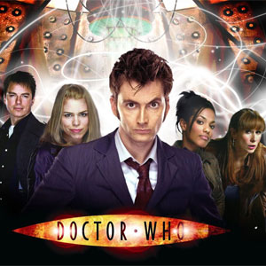

| Rose Tyler |
| Martha Jones |
| Jack Harkness |
| Lady Christina de Souza |
| Rory Williams |
| Amy Pond |
| Clara Oswald |
| River Song |
The Companions
In the long-running BBC television science fiction programme Doctor Who and related works, the term "companion" refers to a character who travels with, or shares the adventures of the Doctor. In most Doctor Who stories, the primary companion acts as an audience surrogate. He or she provides the lens through which the viewer is introduced to the series. The companion character often furthers the story by asking questions and getting into trouble, or by helping, rescuing or challenging the Doctor. This designation is applied to a character by the show's producers, and appears in the BBC's promotional material and off-screen fictional terminology. Until the modern revival of the series in 2005, the term was rarely used on-screen. The Doctor also refers to the show's other leads as his "friends" or "assistants"; the British press have also used the latter term. Although the term "companion" is designated to specific characters by the show's producers, and appears in the BBC's promotional material and off-screen fictional terminology, there is no formal definition that constitutes such a designation. Stephen Brook in The Guardian newspaper's Organgrinder blog discounted Michelle Ryan as a likely next companion but said that "what constitutes a Doctor Who companion is no longer clear"[4] The definition of who is and is not a companion becomes less clear in the newer series.[4] During the Doctor's three latest incarnations, his primary companions, such as Rose Tyler and Martha Jones, have fulfilled a distinct dramatic role, more significant than other, less-prominent TARDIS travellers such as Adam, Jack, and Mickey. The British press referred to Martha as the "first ethnic minority companion in the 43-year television history of Doctor Who"[5] and the "first black assistant",[6] despite the presence of Mickey Smith in the previous season—including several episodes in which he travelled in the TARDIS with the Doctor.